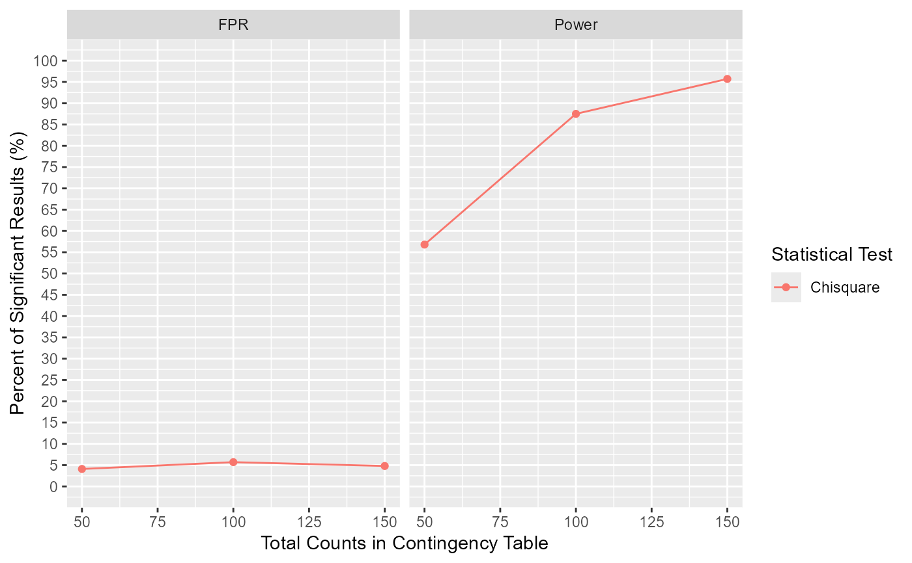

Computes statistical power and optionally false positive rates for tests applied to contingency tables based on simulations. Specify the simulation process using Con_Simul(), which serves as input. Positive rates are computed for the Chi-square test and optionally for Fisher's exact test and the Wald test applied to an ordinal regression model.
Con_Simul_PR(
Con_Simul_Object = Con_Simul(),
add_fisher_exact = FALSE,
add_ord = FALSE,
sample_sizes = NULL,
n_sim = 1000,
FPR = TRUE
)Output from Con_Simul() with the argument verbose set to TRUE.
Whether to compute positive rates for Fisher's Exact test. May add >1 min of calculation time. Defaults to FALSE.
Whether to compute positive rates for Wald test on a fitted ordinal regression model. May add >1 min of calculation time. Defaults to FALSE.
A vector of sample sizes over which false positive rates are to be calculated. A sample size is defined as the total number of counts in a contingency table. Defaults to total count received by Con_Simul_Object.
Number of contingency tables simulated for each positive rate calculation. Defaults to 1000.
Whether to calculate false positive rate in addition to power. Defaults to TRUE.
Returns a list containing:
pos_rate | A dataframe containing positive rates of various tests at specified sample sizes | |
eff_mat | The probability matrix used to calculate power | |
null_mat | The probability matrix used to calculate false positive rate | |
plot | A plot of positive rates of various tests at specified sample sizes |
Power is defined as the percentage of tests yielding positive results (p-value < 0.05) on a set of contingency tables simulated based on the data-generating process and probability matrix specified in Con_Simul(). The specified probability matrix should represent the parameters of the population where there is a desire to detect a significant effect in the sample. The simulated contingency tables then reflect the sample outcomes of the specified population parameter.
False Positive Rate is defined as the percentage of tests yielding positive results (p-value < 0.05) on contingency tables simulated based on a probability matrix without treatment effect. The odd ratios between lesion scores for all treatment groups are assumed to be the same as that for control (first row in the probability matrix).
P-values for the Chi-square test are computed using stats::chisq.test() with default parameters. P-values for Fisher's exact test are computed using stats::fisher.test() with simulate.p.value set to TRUE, alongside default parameters. P-values for ordinal regression are computed from stats::anova() applied to the output of ordinal::clm().
## Below I show how we can perform a simple power calculation using this tool.
## Suppose I want to calculate power for Treatment B which halves the lesions in category 2 and 3.
## I then specify the following probability matrix and feed it into Con_Simul():
probs_mat = matrix(nrow = 2, ncol = 3, data = c(1/6, 1/3, 1/6, 1/12, 1/6, 1/12))
sim_tab = Con_Simul(probs_mat)
## Next, I feed the output into Con_Simul_PR():
Con_Simul_PR(sim_tab, sample_sizes = c(50, 100, 150))
#> $pos_rate
#> Total_Count Percent_of_Significant_Results Statistical_Test Class
#> 1 50 56.8 Chisquare Power
#> 2 100 87.5 Chisquare Power
#> 3 150 95.7 Chisquare Power
#> 10 50 4.1 Chisquare FPR
#> 11 100 5.7 Chisquare FPR
#> 12 150 4.8 Chisquare FPR
#>
#> $eff_mat
#> [,1] [,2] [,3]
#> [1,] 0.1666667 0.16666667 0.16666667
#> [2,] 0.3333333 0.08333333 0.08333333
#>
#> $null_mat
#> [,1] [,2] [,3]
#> [1,] 0.1666667 0.1666667 0.1666667
#> [2,] 0.1666667 0.1666667 0.1666667
#>
#> $plot

#>
## Results: Power is ~55, 86, and 97% for the Chi-square test using total counts of 50, 100, and 150, respectively.
## The same power for Chi-square test can be calculated using Cohen's omega (w) method which is faster but has its own limitations;
## e.g. assumes one data generating process for the contingency table (the no fixed marginals).
library(pwr)
#> Warning: package 'pwr' was built under R version 4.4.1
pwr::pwr.chisq.test(w = ES.w2(probs_mat), df = 2, sig.level = 0.05, N = 100)
#>
#> Chi squared power calculation
#>
#> w = 0.3333333
#> N = 100
#> df = 2
#> sig.level = 0.05
#> power = 0.8563144
#>
#> NOTE: N is the number of observations
#>
## Results: Power is 85.6% for the Chi-square test at the total count of 100.